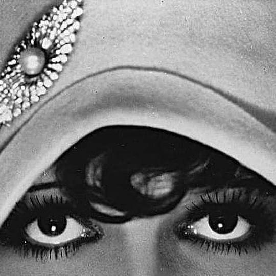
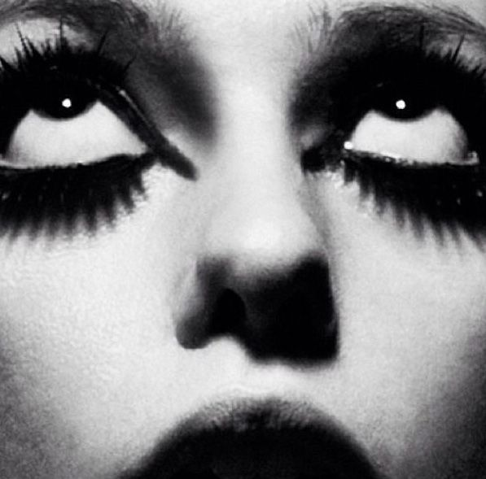
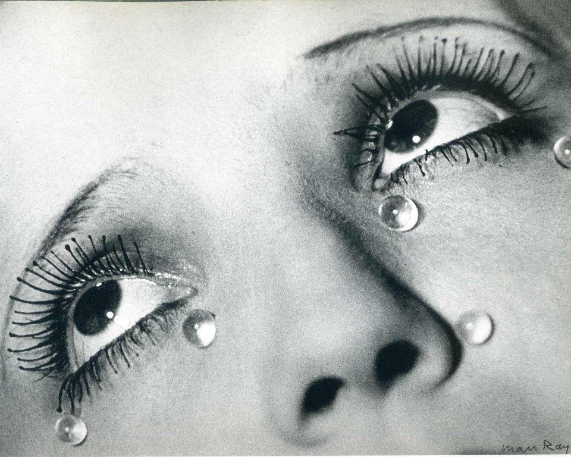
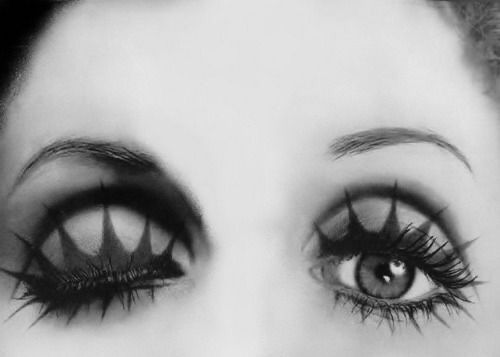

From the early cinematic gaze, of Betty Amann in the 1920s-1930s silent films to the surreal intensity of Man Ray's "Glass Tears" in the early 1930s, the eye has long captured emotion and identity. With no spoken dialogue, the eyes became a vehicle to depicy intensity, vulnerability, and intrigue. Man Ray's 'Glass Tears' capture an artifical yet haunting emotionality, showing how the gaze may be recontructed, sylized, and detached from the natural human face.
By the 1960s, performers such as Julie Driscoll brought expressive eyes and bold makeup to the forefront of popular culture, reflecting the era's fascination with individuality, experimentation, and the mod aesthetic.
Even in the decades which followed, figures such as Bridget Hall, during the 1990s, continue to use eyes to explore the timeless symbol spanning across decades of visual culture. Her gaze shows the symbolic power within editorial photography. Her portraits often underscoring softness, distamce, and introspection; highlighting how eyes can communicate mood.
Across eras of Western media, photographer repeatedly hihghlight the eye as a source of expression. There tends to be dramatic eye makeup, and often a gaze not directed at the camera, suggesting contemplation, secrecy, and untimately, emptional distance.
➤
➤